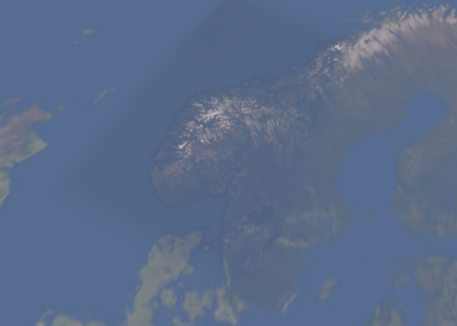
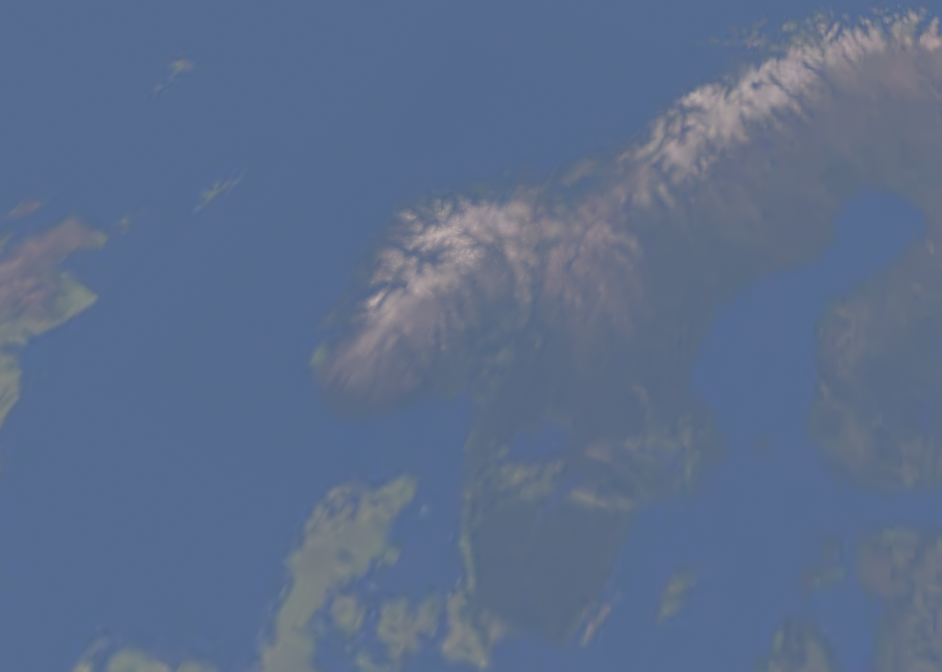
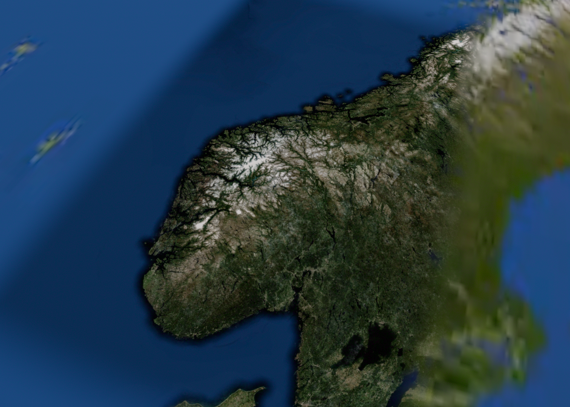
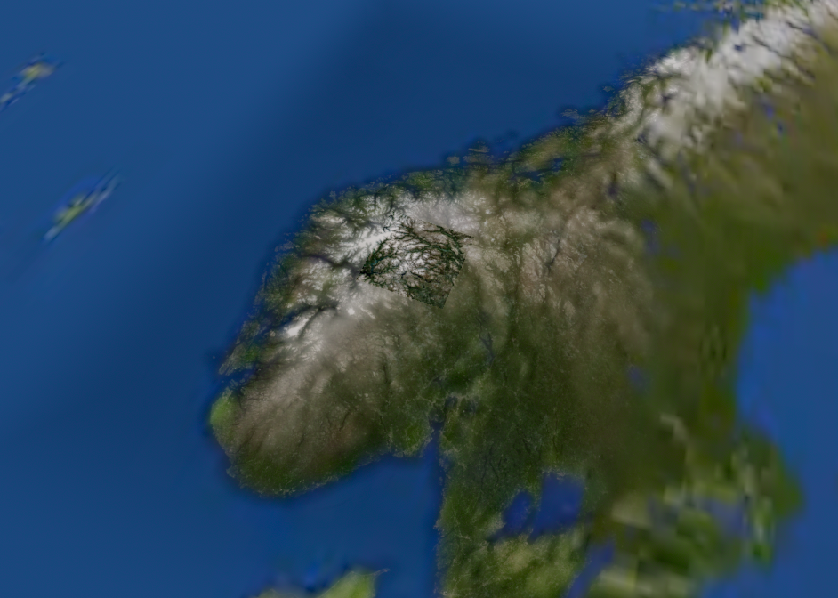

TUNE. 같은 위성 분포의 희미한 주변 결을 더 드러냈습니다. 고도·광량·층 수는 동일합니다. 가까운 큰 구름 덩어리나 실제 볼륨을 추가한 결과는 아닙니다. 지형 사각 경계 전체 해결·근경 인계 완료 판정도 아닙니다.
실제 휠 검토 · 궤도 구름 양 메뉴 · 조건·GPU·원본 기록
두 화면 모두 정합 법선·깊이 보정을 사용합니다. 왼쪽은 기존 즉시 색 전환, 오른쪽은 지형 등장 진행률에 연결한 색 전환과 넓힌 외곽 혼합입니다. 원경 디테일이 부드럽게 나타나지만 최종 색 차이 전체 해결은 아닙니다.




8초 .10→.235→.10. 시야각과 near 규칙을 p.18에서 일치시켰습니다. 자동 카메라 영상이며 전체 motion gate나 실제 휠 성능 증거는 아닙니다.